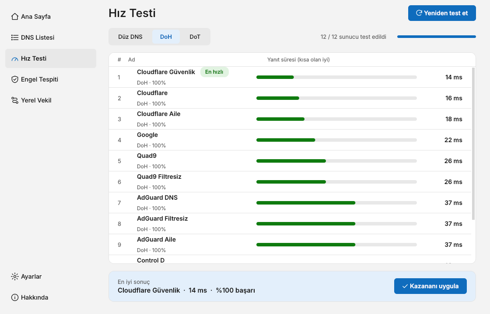
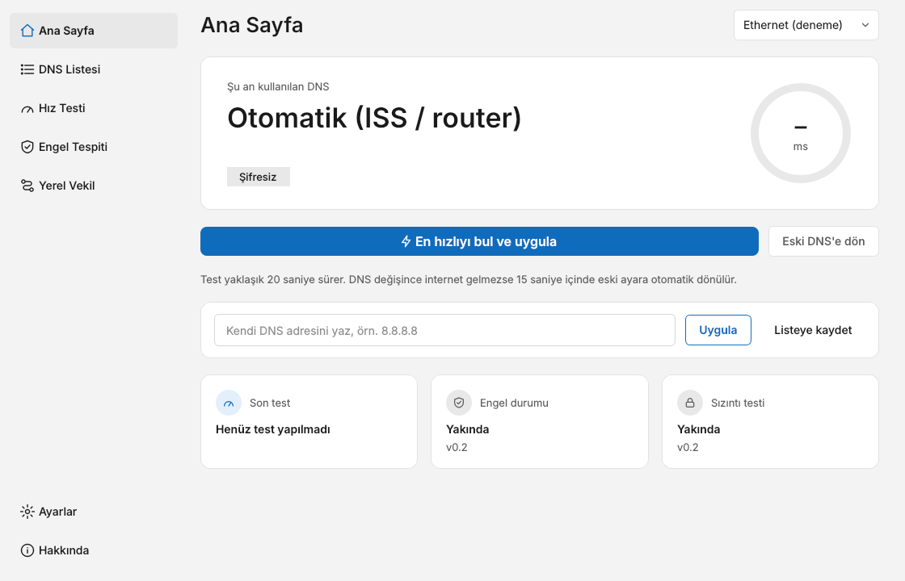
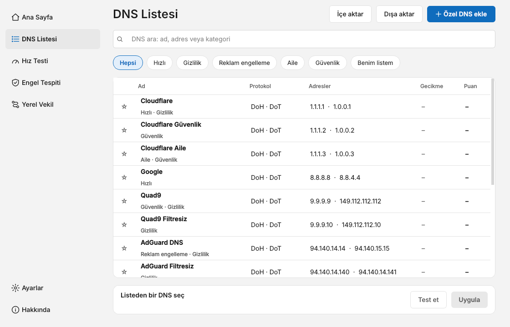

Sana en hızlı DNS'i bul,
tek tıkla uygula
DNS Hub, ücretsiz DNS sağlayıcılarını senin internet hattında test eder, en hızlısını seçer ve Windows'a uygular. Ücretsiz, reklamsız ve açık kaynak.

Neler yapar?
Karmaşık ağ ayarlarına girmeden, hattına en uygun DNS'i bulmanı sağlar.
Kendi hattında hız testi
Düz DNS, DoH ve DoT ayrı ayrı ölçülür. Gecikme, dalgalanma ve başarı oranı bir puanda birleşir. Sonuçlar geldikçe liste hıza göre canlı sıralanır.
Tek tıkla uygulama
"En hızlıyı bul ve uygula" testi yapar, kazananı ağ bağdaştırıcına yazar. Önce şifreli DNS (DoH), olmazsa düz DNS denenir.
Güvenlik sayacı
DNS değişince internet gelmezse 15 saniye içinde eski ayara dönülür. Eski ayar her seferinde önceden yedeklenir.
Kendi DNS'ini ekle
IPv4, IPv6, DoH adresi ve DoT adı girebilirsin. Kaydetmeden önce 53, 443 ve 853 portları denenir. Liste içe ve dışa aktarılabilir.
13 ücretsiz sağlayıcı
Cloudflare, Google, Quad9, AdGuard, CleanBrowsing, Control D, Mullvad ve OpenDNS, filtreli ve filtresiz sürümleriyle listede.
Sade ve kişisel
Açık ve koyu tema, üç dil, sistem tepsisi ve Windows ile başlatma. Hesap, reklam ve veri toplama yok.
Görünüm
Windows 11 ile uyumlu, sade bir arayüz. Açık ve koyu temayı destekler.


Nasıl kullanılır?
Kurulum gerektirmez, tek dosya çalışır.
- İndir. Sürümler sayfasından
DNSHub.exedosyasını al. - Yönetici olarak çalıştır. Windows, DNS ayarını yalnızca yönetici yetkisiyle değiştirmeye izin verir.
- Testi başlat. Ağ bağdaştırıcını seç, "En hızlıyı bul ve uygula" düğmesine bas. Test yaklaşık 20 saniye sürer.
- Sonucu kontrol et. İnternet çalışıyorsa onayla. Çalışmıyorsa program eski ayara kendiliğinden döner.
Bilmen gerekenler
- Windows 11: Şifreli DNS (DoH) ayarını yazan komut yalnızca Windows 11'de vardır. Windows 10'da DNS düz olarak uygulanır.
- Her engeli aşmaz: DNS değiştirmek yalnızca alan adı tabanlı engellerde işe yarar, IP veya URL tabanlı engellerde yaramaz.
- SmartScreen uyarısı: Program dijital olarak imzalı değildir, ilk çalıştırmada Windows uyarı gösterebilir. Kaynak kodu açıktır; .exe, GitHub Actions ile bu depodaki koddan derlenir ve her sürümle birlikte SHA256 özeti yayınlanır.
- Markalar: Adı geçen DNS sağlayıcıları sahiplerinin ticari markasıdır, DNS Hub bunlarla bağlantılı değildir. Program garanti verilmeden, olduğu gibi sunulur.
Sık sorulan sorular
Gerçekten ücretsiz mi?
Evet. Reklam, abonelik ya da gizli ücret yok. MIT lisansıyla yayınlanır; kullanabilir, inceleyebilir, değiştirebilir ve paylaşabilirsin.
Verilerimi topluyor mu?
Hayır. Hesap yok, kullanım verisi toplanmaz. Ayarların bilgisayarında saklanır. Testler yalnızca senin seçtiğin DNS sunucularına sorgu gönderir.
İnternetim kesilirse ne olur?
Güvenlik sayacı açıkken, DNS değişikliğinden sonra internet gelmezse program 15 saniye içinde eski ayarı geri yükler. İstersen "Eski DNS'e dön" ile elle de geri alabilirsin.
Hangi DNS en hızlısı?
Herkes için tek cevap yok; şehre, internet sağlayıcına ve saate göre değişir. Bu yüzden program testi senin hattında çalıştırır.
Yeni özellikler gelecek mi?
Planlananlar: sağlayıcı DNS'i ile şifreli DNS cevaplarını karşılaştıran engel tespiti ve sızıntı testi, ayrıca yerel şifreli DNS vekili. Bunlar henüz hazır değil.